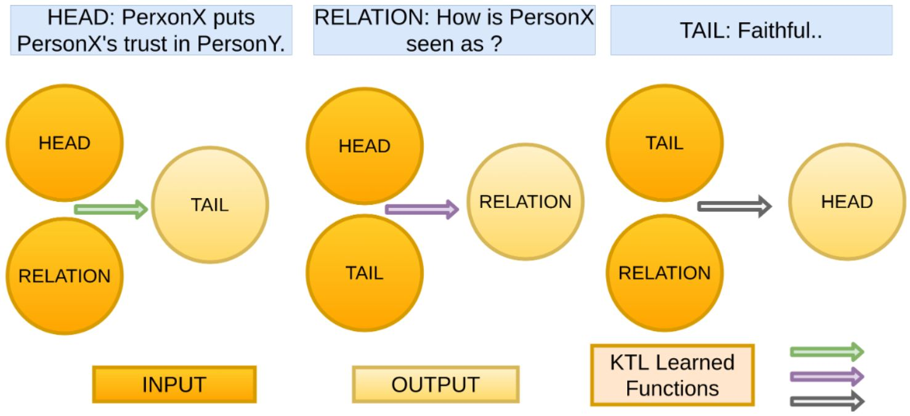

Cognition (NLP)
Cognition (Vision)
Human-Centered AI
AI Foundations
Self-Supervised Knowledge Triplet Learning

Banerjee, Baral
EMNLP 2020
MUTANT: OOD generalization in VQA
 Gokhale, Banerjee, Baral, Yang
Gokhale, Banerjee, Baral, Yang
EMNLP 2020
Gokhale, Banerjee, Baral, Yang
EMNLP 2020
Gokhale, Banerjee, Baral, Yang
EMNLP 2020
Improving Natural Language Inference
 Mitra, Shrivastava, Baral
Mitra, Shrivastava, Baral
AAAI 2020 (to appear)
Event-Sequences from Image Pairs
 Gokhale, Sampat, Fang, Yang, Baral.
Gokhale, Sampat, Fang, Yang, Baral.
Preprint; (CVPR'19 Workshop)
Imitation Learning: Combining Language, Vision and Demonstration
 Stepputtis, Campbell, Phielipp, Baral, Ben-Amor.
Stepputtis, Campbell, Phielipp, Baral, Ben-Amor.
NeurIPS 2019 Workshop on Robot Learning
Book: Knowledge representation, reasoning and declarative problem solving
 Baral
Baral
Cambridge University Press
Knowledge Hunting & Neural Language Models for WSC
 Prakash, Sharma, Mitra, Baral.
Prakash, Sharma, Mitra, Baral.
ACL 2019
Integrating Knowledge and Reasoning in Image Understanding.
 Aditya, Yang, Baral.
Aditya, Yang, Baral.
IJCAI 2019
Cohort Selection from Clinical Notes
 Rawal, Prakash, Adhya, Kulkarni, Baral, Devarakonda
Rawal, Prakash, Adhya, Kulkarni, Baral, Devarakonda
Preprint
Probabilistic Reasoning with Answer Sets
 Baral, Gelfond, Rushton
Baral, Gelfond, Rushton
TPLP 2009
Open-Book QA
 Banerjee, Pal, Mitra, Baral.
Banerjee, Pal, Mitra, Baral.
ACL 2019
Spatial Knowledge Distillation to aid Visual Reasoning.
 Aditya, Saha, Yang, Baral
Aditya, Saha, Yang, Baral
WACV 2019
Discovering drug-drug interactions
 Tari, Anwar, Liang, Cai and Baral.
Tari, Anwar, Liang, Cai and Baral.
Bioinformatics 26(18):2010.
(special issue of ECCB 2010.)
Using P-log for Causal and Counterfactual Reasoning and Non-Naive Conditioning
 Baral, Hunsaker
Baral, Hunsaker
IJCAI 2007
QA using ASP and NLI
 Mitra, Clark, Tafjord, Baral.
Mitra, Clark, Tafjord, Baral.
AAAI 2019
Reasoning using Neural architectures for VQA
 Aditya, Yang, Baral
Aditya, Yang, Baral
AAAI 2018
Identifying novel drug indications
 Tari, Vo, Liang, Patel, Baral, Cai
Tari, Vo, Liang, Patel, Baral, Cai
PLoS ONE
Combining Multiple Knowledge Bases
 Baral, Minker, Kraus
Baral, Minker, Kraus
IEEE Transactions on
Knowledge and Data Engineering, June 1991
Solving simple word arithmetic problems
 Mitra, Baral.
Mitra, Baral.
AAAI 2016
Image and multi-modal document Understanding and Visual QA
 Aditya, Yang, Baral, Aloimonos
Aditya, Yang, Baral, Aloimonos
UAI 2018
Hypothesis Formation in Biochemical Networks
 Tran, Baral, Nagaraj, Joshi
Tran, Baral, Nagaraj, Joshi
ECCB 2005
Formalizing sensing actions
 Baral, Son
Baral, Son
AI Journal, Jan 2001
ASP based ILP to solve BaBI
 Mitra, Baral .
Mitra, Baral .
AAAI 2016
Image Understanding using Scene Description Graph.
 Aditya, Yang, Baral, Aloimonos, Fermuller
Aditya, Yang, Baral, Aloimonos, Fermuller
CVIU Journal. Dec 2017
Representing and reasoning about cell signaling networks
 Baral, Chancellor, Tran, Tran, Joy, Berens
Baral, Chancellor, Tran, Tran, Joy, Berens
ISMB/ECCB 2004
Maintenance goals of agents
 Baral, Eiter, Bjaereland, Nakamura
Baral, Eiter, Bjaereland, Nakamura
A Platform to build NL to KR translation systems
 Nguyen, Mitra, Baral.
Nguyen, Mitra, Baral.
ACL 2015
DeepIU: An architecture for image understanding.
 Aditya, Baral, Yang, Aloimonos, Fermuller
Aditya, Baral, Yang, Aloimonos, Fermuller
Advances in Cognitive Systems 2016.
High Level Language for Human-Robot Interaction
 Baral, Lumpkin, Scheutz
Baral, Lumpkin, Scheutz
Advances in Cognitive Systems, 2017.
Planning in Non-deterministic Domains
 Baral, Eiter, Zhao
Baral, Eiter, Zhao
AAAI 2005
Elaboration Tolerant Revision of Goals
 Baral, Zhao
Baral, Zhao
AAAI 2008
Modeling multi-agent scenarios involving agents' knowledge about other's knowledge
 Baral, Gelfond, Son, Pontelli
Baral, Gelfond, Son, Pontelli
AAMAS 2010
Multi-Agent Action Modeling using Perspective Fluents
 Baral, Gelfond, Pontelli, Son
Baral, Gelfond, Pontelli, Son
CommonSense 2015,
AAAI Spring Symposium 2015.
Incremental and Iterative Learning of Answer Set Programs
 Mitra, Baral
Mitra, Baral
TPLP 2018.